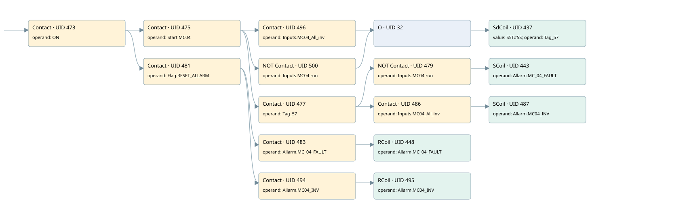

mc04
allarms 1 · 검색 색인 순서 11 · 원본 내부 NID 추정 12
백업 PLF 원본의 3042258 바이트 위치에서 복원한 XML. 검색 문서 1791의 객체 키 161022005d62000000000000와 연결했다. 이름 해석 16/16개. 남은 RefId는 상수 또는 미해석 참조다.
연결 구조 다시 그리기
원본 Part/PCon/Wire를 이용한 연결도다. TIA 화면의 래더 배치 또는 실행 결과를 재현한 그림은 아니다. 핀 연결은 아래 표와 원본 XML을 기준으로 읽는다. 노드 위에 마우스를 두면 피연산자 이름을 볼 수 있다.

접점·코일·블록과 피연산자
| Part UID | Gate | Negated 핀 | 연결 피연산자 |
|---|---|---|---|
| 473 | Contact | operand = ON | |
| 475 | Contact | operand = Start MC04 | |
| 496 | Contact | operand = Inputs.MC04_All_inv | |
| 500 | Contact | operand | operand = Inputs.MC04 run |
| 32 | O | ||
| 437 | SdCoil | value = S5T#5S; operand = Tag_57 | |
| 477 | Contact | operand = Tag_57 | |
| 479 | Contact | operand | operand = Inputs.MC04 run |
| 443 | SCoil | operand = Allarm.MC_04_FAULT | |
| 486 | Contact | operand = Inputs.MC04_All_inv | |
| 487 | SCoil | operand = Allarm.MC04_INV | |
| 481 | Contact | operand = Flag.RESET_ALLARM | |
| 483 | Contact | operand = Allarm.MC_04_FAULT | |
| 448 | RCoil | operand = Allarm.MC_04_FAULT | |
| 494 | Contact | operand = Allarm.MC04_INV | |
| 495 | RCoil | operand = Allarm.MC04_INV |
접점 경로를 펼친 조건식
Contact·O/A·비교기의 원본 연결을 읽기 쉽게 펼친 보조 해석이다. POWER는 전원 레일 시작을 뜻한다. 호출 블록·에지·타이머의 내부 동작과 다중 쓰기 순서는 이 표로 실행 검증하지 않았다. 미해석 핀과 RefId는 원문 연결표에서 확인한다.
| UID | 동작 | 대상 | 원본 접점 경로 | 내용 |
|---|---|---|---|---|
| 437 | SdCoil | Tag_57 | (((ON AND Start MC04) AND Inputs.MC04_All_inv) OR ((ON AND Start MC04) AND NOT [Inputs.MC04 run])) | 시간 동작 SdCoil; 타이머 의미 추가 확인 / 시간 인자 S5T#5S |
| 443 | SCoil | Allarm.MC_04_FAULT | (((ON AND Start MC04) AND Tag_57) AND NOT [Inputs.MC04 run]) | 조건 성립 시 Set |
| 487 | SCoil | Allarm.MC04_INV | (((ON AND Start MC04) AND Tag_57) AND Inputs.MC04_All_inv) | 조건 성립 시 Set |
| 448 | RCoil | Allarm.MC_04_FAULT | ((ON AND Flag.RESET_ALLARM) AND Allarm.MC_04_FAULT) | 조건 성립 시 Reset |
| 495 | RCoil | Allarm.MC04_INV | ((ON AND Flag.RESET_ALLARM) AND Allarm.MC04_INV) | 조건 성립 시 Reset |
원본 배선 연결
| Wire UID | 동일 Wire 연결 끝점 |
|---|---|
| 485 | Powerrail {} ↔ Part 473.in |
| 459 | ORef 449 (ON) ↔ Part 473.operand |
| 474 | Part 473.out ↔ Part 475.in ↔ Part 481.in |
| 460 | ORef 450 (Start MC04) ↔ Part 475.operand |
| 476 | Part 475.out ↔ Part 496.in ↔ Part 500.in ↔ Part 477.in |
| 499 | ORef 497 (Inputs.MC04_All_inv) ↔ Part 496.operand |
| 23 | Part 496.out ↔ Part 32.in1 |
| 503 | ORef 501 (Inputs.MC04 run) ↔ Part 500.operand |
| 33 | Part 500.out ↔ Part 32.in2 |
| 34 | Part 32.out ↔ Part 437.in |
| 461 | ORef 451 (S5T#5S) ↔ Part 437.value |
| 462 | ORef 452 (Tag_57) ↔ Part 437.operand |
| 463 | ORef 453 (Tag_57) ↔ Part 477.operand |
| 21 | Part 477.out ↔ Part 479.in ↔ Part 486.in |
| 464 | ORef 454 (Inputs.MC04 run) ↔ Part 479.operand |
| 480 | Part 479.out ↔ Part 443.in |
| 466 | ORef 455 (Allarm.MC_04_FAULT) ↔ Part 443.operand |
| 30 | ORef 31 (Inputs.MC04_All_inv) ↔ Part 486.operand |
| 29 | Part 486.out ↔ Part 487.in |
| 493 | ORef 489 (Allarm.MC04_INV) ↔ Part 487.operand |
| 468 | ORef 456 (Flag.RESET_ALLARM) ↔ Part 481.operand |
| 22 | Part 481.out ↔ Part 483.in ↔ Part 494.in |
| 469 | ORef 457 (Allarm.MC_04_FAULT) ↔ Part 483.operand |
| 484 | Part 483.out ↔ Part 448.in |
| 471 | ORef 458 (Allarm.MC_04_FAULT) ↔ Part 448.operand |
| 24 | ORef 25 (Allarm.MC04_INV) ↔ Part 494.operand |
| 26 | Part 494.out ↔ Part 495.in |
| 27 | ORef 28 (Allarm.MC04_INV) ↔ Part 495.operand |
식별자 해석 근거 16개
| ORef UID | RefId | 이름 | IdentXmlPart 파일 | 해석 방법 |
|---|---|---|---|---|
| 449 | 1 | ON | 0658-IdentXmlPart.xml | UID/RID + search-text + NID agreement |
| 450 | 53 | Start MC04 | 0658-IdentXmlPart.xml | UID/RID + search-text + NID agreement |
| 497 | 275 | Inputs.MC04_All_inv | 0657-IdentXmlPart.xml | UID/RID + search-text + NID agreement |
| 501 | 274 | Inputs.MC04 run | 0657-IdentXmlPart.xml | UID/RID + search-text + NID agreement |
| 452 | 54 | Tag_57 | 0658-IdentXmlPart.xml | UID/RID + search-text + NID agreement |
| 451 | 175 | S5T#5S | 0656-IdentXmlPart.xml | literal candidate: UID/RID/NID + nearby named declarations + search-text agreement |
| 453 | 54 | Tag_57 | 0658-IdentXmlPart.xml | UID/RID + search-text + NID agreement |
| 454 | 274 | Inputs.MC04 run | 0657-IdentXmlPart.xml | UID/RID + search-text + NID agreement |
| 455 | 56 | Allarm.MC_04_FAULT | 0657-IdentXmlPart.xml | UID/RID + search-text + NID agreement |
| 31 | 275 | Inputs.MC04_All_inv | 0657-IdentXmlPart.xml | UID/RID + search-text + NID agreement |
| 489 | 215 | Allarm.MC04_INV | 0657-IdentXmlPart.xml | UID/RID + search-text + NID agreement |
| 456 | 13 | Flag.RESET_ALLARM | 0657-IdentXmlPart.xml | UID/RID + search-text + NID agreement |
| 457 | 56 | Allarm.MC_04_FAULT | 0657-IdentXmlPart.xml | UID/RID + search-text + NID agreement |
| 458 | 56 | Allarm.MC_04_FAULT | 0657-IdentXmlPart.xml | UID/RID + search-text + NID agreement |
| 25 | 215 | Allarm.MC04_INV | 0657-IdentXmlPart.xml | UID/RID + search-text + NID agreement |
| 28 | 215 | Allarm.MC04_INV | 0657-IdentXmlPart.xml | UID/RID + search-text + NID agreement |
검색 코드 보조 자료
참조 명칭을 찾기 위한 자료이며 실행 순서나 AND/OR 관계는 위 연결표로 확인한다.
"on" "start mc04" "inputs".mc04_all_inv "tag_57" s5t#5s "flag".reset_allarm "allarm".mc_04_fault "allarm".mc_04_fault "allarm".mc04_inv "allarm".mc04_inv "inputs"."mc04 run" "tag_57" "inputs"."mc04 run" "allarm".mc_04_fault "inputs".mc04_all_inv "allarm".mc04_inv